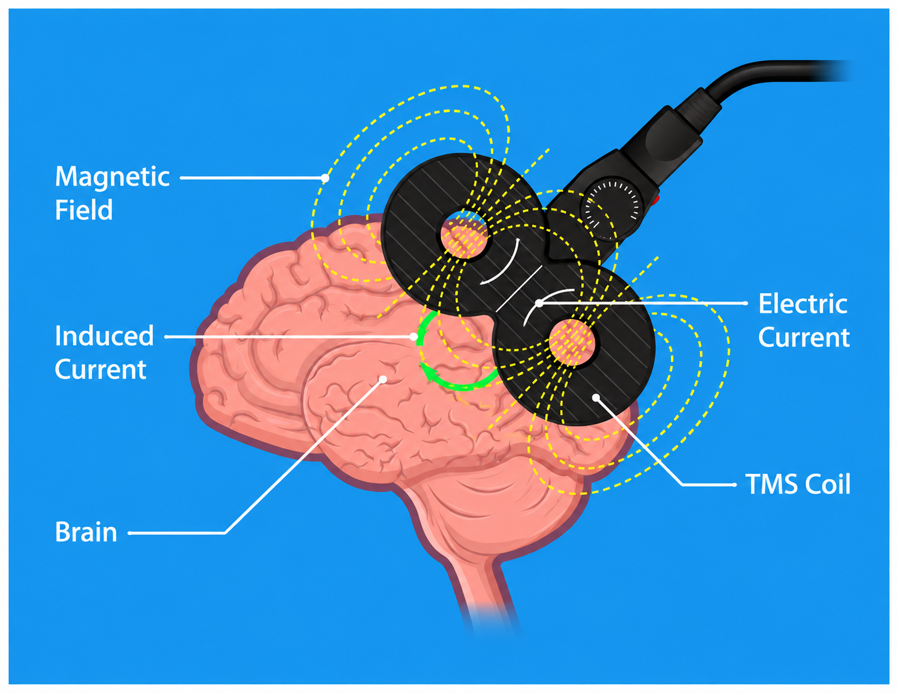
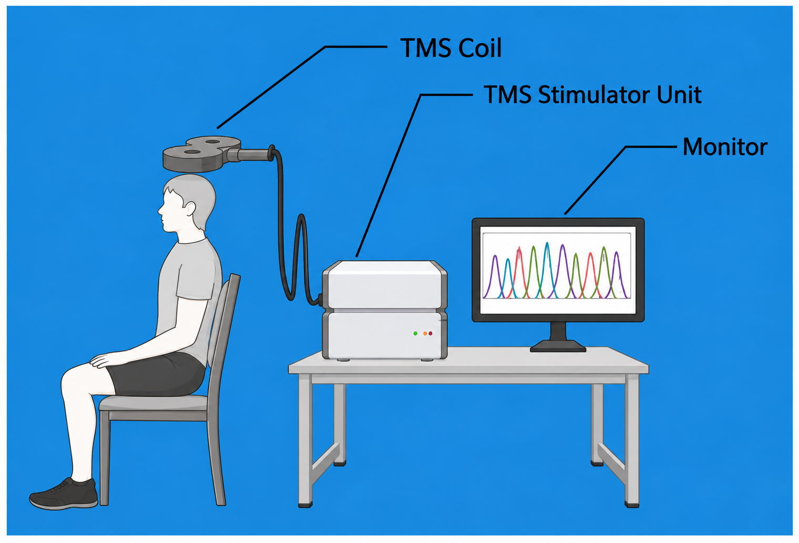
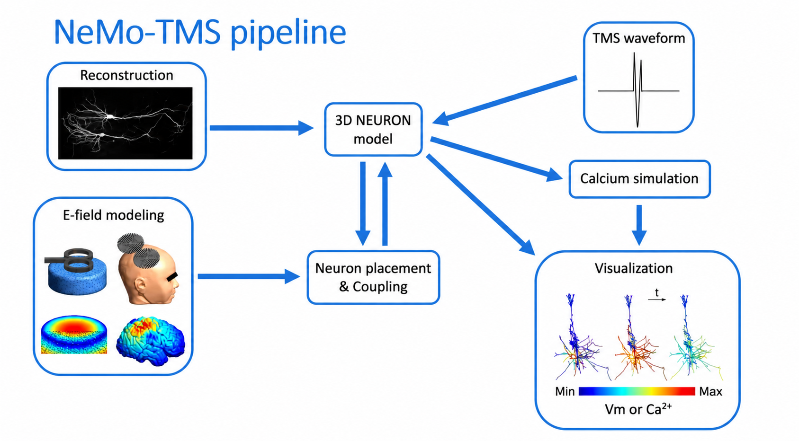
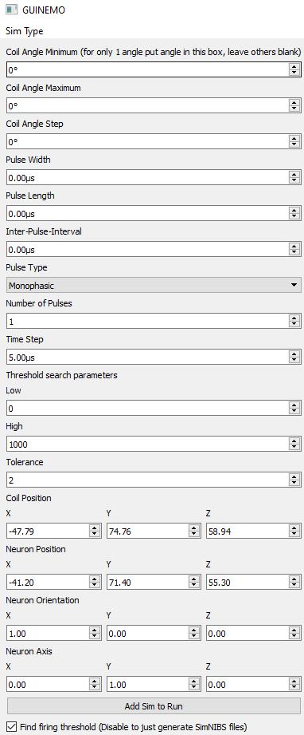

THE BASICS
What is TMS?
Transcranial magnetic stimulation (TMS) uses a coil placed tangential to the head, creating a rapidly changing magnetic field. That magnetic field passes through the scalp and skull, inducing a small electric field in the brain. This induced field changes neuronal activity and can trigger a response.
When pulses are delivered repeatedly, the technique is called repetitive TMS, or rTMS. Repeated stimulation can influence activity within the targeted brain region and the larger neural networks connected to it. In this project, understanding and optimizing that interaction may ultimately reduce the stimulation power required. For depression, one of the most common targets is the left dorsolateral prefrontal cortex (DLPFC).
A rapidly changing electrical current flows through the TMS coil.
The changing current produces a brief magnetic field around the coil.
The magnetic field induces an electric field in conductive brain tissue.
If stimulation is strong enough, neuronal membrane activity can be altered.

A SHORT HISTORY
History of TMS
The physics behind TMS comes from electromagnetic induction, but practical stimulation of the human brain for clinical treatment arrived much later. Clinical uses have expanded from depression to conditions including migraine, obsessive compulsive disorder (OCD), smoking cessation, and, more recently, post-traumatic stress disorder (PTSD). TMS is also being investigated for additional neurological and psychiatric conditions. Depression remains the primary focus of this project.
Electromagnetic induction
Michael Faraday demonstrated that a changing magnetic field can induce electrical current.
Modern TMS is demonstrated
Anthony Barker and colleagues demonstrated noninvasive magnetic stimulation of the human motor cortex, establishing the modern form of TMS.
FDA clearance for major depression
The first TMS system was cleared by the U.S. Food and Drug Administration for treating major depressive disorder in adults who had not received satisfactory benefit from at least one antidepressant medication in the current episode.
Additional clinical uses expand
FDA cleared TMS applications expanded beyond major depression. TMS was cleared for treatment of pain associated with certain migraine headaches in 2013, deep TMS was cleared for obsessive compulsive disorder in 2018, and a deep TMS system was cleared as an aid for short term smoking cessation in adults in 2020.
Faster, more personalized, and broader TMS
Recent work has focused on shorter treatment protocols, accelerated stimulation schedules, and more individualized targeting. In 2022, the FDA cleared the Magnus Neuromodulation System with SAINT technology, an accelerated depression treatment approach that combines repeated iTBS sessions with individualized targeting. In 2026, the FDA also cleared a TMS system for treatment of PTSD. Research continues on connectivity guided targeting, accelerated protocols, and ways to make TMS more efficient and accessible.
CLINICAL TMS
What does a depression treatment course look like?
Exact protocols vary by device and treatment type, but a traditional high frequency depression protocol illustrates why the motor cortex plays such an important role in setting treatment intensity.
Find the motor hotspot and measure motor threshold
The coil is positioned over the primary motor cortex (M1), and stimulation intensity is adjusted until a reliable motor evoked response can be measured from a hand muscle. This establishes the patient's motor threshold: a patient specific physiological reference for TMS intensity.
Move to the depression target
For clinical treatment of depression, the coil is then positioned over the left DLPFC rather than the motor cortex.
Set treatment intensity using the “120% rule”
A widely used high frequency left DLPFC protocol delivers stimulation at approximately 120% of the patient's resting motor threshold. In other words, the intensity measured at the motor cortex is multiplied by 1.2 and used as the reference dose for stimulation of the DLPFC.

WHY USE MOTOR THRESHOLD?
The motor cortex gives us something the DLPFC does not
The strong electromagnetic pulse produced by TMS can create large artifacts in simultaneous neural recordings such as electroencephalography (EEG), making immediate local measurement of DLPFC firing technically challenging. The motor cortex provides a simpler physiological readout: when stimulation activates the motor system, a motor evoked potential can be recorded with electromyography (EMG) from a hand muscle. Because the DLPFC has no equivalent physical motor response, motor threshold provides a patient specific reference for setting stimulation intensity. A common depression protocol uses approximately 120% of resting motor threshold over the DLPFC.
AN IMPORTANT DISTINCTION
120% is a clinical protocol and not a universal biological constant
Different TMS devices and settings can use different stimulation intensities. The 120% value is especially associated with established depression protocols and should not be interpreted as proof that the motor cortex and the DLPFC require stimulation in a fixed 120% biological relationship.
Traditional rTMS courses for depression commonly involve treatment on weekdays over several weeks. Newer approaches such as theta burst and accelerated protocols are being studied and used to reduce the amount of time required for treatment.
PROJECT MOTIVATION
Steps Towards More Accessible TMS
TMS avoids surgery and has become an important option for depression, but noninvasive does not automatically mean easy to access. Treatment still requires specialized equipment, trained staff, repeated visits, and substantial electrical and clinical infrastructure.
Why access can still be difficult
- Time: traditional treatment can require frequent visits over four to six weeks.
- Cost and infrastructure: systems require specialized equipment, clinic space, operators, and maintenance.
- Individual variability: anatomy, target location, and neuronal response vary from person to person.
- Targeting and dosing: the optimal stimulation location and intensity are still active areas of research.
- Limited direct depth: conventional TMS most directly affects superficial cortical tissue, while clinical effects can involve larger connected networks.
Where TMS could improve
- More individualized targeting based on anatomy and brain networks.
- Better ways to determine the stimulation dose needed at the actual treatment region.
- Shorter treatment sessions and courses when clinically appropriate.
- More energy efficient stimulation parameters and hardware.
- Systems that are easier to deploy in more clinics and, eventually, less resource intensive settings.
COMPUTATIONAL WORKFLOW
From the TMS Field to an Individual Neuron
NeMo TMS connects electric field modeling with a three dimensional neuron model so that stimulation can be examined at the scale where an action potential actually begins.


One Variable Can Be Changed at a Time
The simulation interface allows the project to isolate specific parameters while keeping the rest of the model constant. This makes it possible to identify the coil orientation and pulse settings that produce the lowest neuronal firing threshold for each model.
OUR RESEARCH
What Is Our Role?
Instead of testing stimulation parameters directly in patients, we use computational models to examine how neurons respond to TMS under controlled conditions.
Model the head and coil
We use electromagnetic modeling to estimate the electric field produced in the brain by a TMS coil.
Place realistic neurons in the field
Neuron morphologies are positioned in the motor cortex and left DLPFC so we can study how anatomy and orientation affect stimulation.
Simulate the neuronal response
We calculate how membrane voltage changes and determine the stimulation threshold required to make modeled neurons fire.
Compare stimulation parameters
We vary factors such as coil orientation, pulse width, waveform, cortical region, and pyramidal neuron morphology to look for the most efficient conditions.
THE QUESTION WE ARE BUILDING TOWARD
Does motor threshold translate to the DLPFC as simply as 120%?
The motor cortex is useful because its activation can be measured through a muscle response. But the DLPFC is a different cortical region, with different geometry, field orientation, cellular organization, and neuronal morphologies.
That raises an important question: should a fixed percentage of M1 motor threshold always be expected to represent the most efficient stimulation dose for the DLPFC?